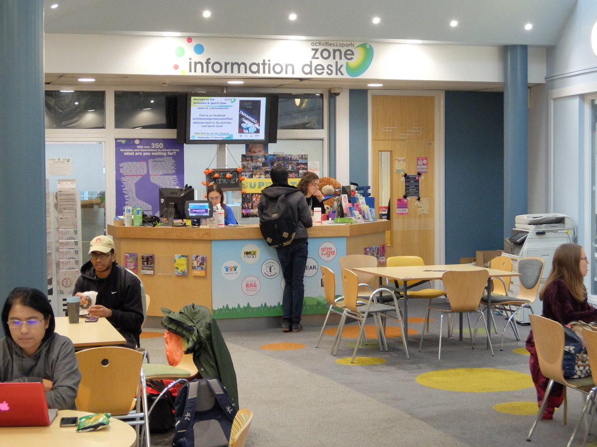

Societies
What societies can I get involved with?
There are so many Computer Science related societies at Sheffield I know you'll have a hard time deciding which ones not to join!
Artificial Intelligence Society
The Artificial Intelligence Society are always hosting a wide range of interesting talks, workshops and presentations about AI. If you know nothing about AI and want to learn more or even if you think you know everything there is to know, the Artificial Intelligence Society would love you to join. Find out more here.
Computer Science Society
The Computer Science Society host loads of different events mostly relating to coding. They hold events such as GameJam where everyone competes in teams (or by yourself if you want a challenge) to make a game. They even hold mentoring sessions for help with all your Computer Science needs. Find out more here.
Give It A Go
Give It A Go is technically not a society, it is more of an event programme which holds the biggest range of events anywhere in the Students' Union. Want to learn how to knit? Or go out for a run? Or even learn how to run a cinema? I would highly recommed at least having a look through their website as I'm sure there will be at least a few things which grab your eye.
HackSheffield
HackSheffield - contrary to the name - is not where you go to learn how to be a cyber criminal and learn to hack your way through anything, they mostly hold events where you get together in a team with the sole aim of coding your way to completing a certain task or project. Not only that, but they also provide free food, so if you're into food, coding or ideally both, you should check them out.
Sheffield Roboteers
If you've ever watched Robot Wars and wanted to be a part of it then this is definitely the society for you. Roboteers create fighting ant-weight robots and let them fight in events throughout the year. They also hold many interesting talks on robotics and robotics-related subjects. So if robots are your thing then this is where you should be. Find out more here.
Sheffield Bionics
Sheffield Bionics focus on the creation of prosthetic legs and arms and brain-computer interfaces. This year they plan on creating a fully functional prosthetic leg and then next year moving on to creating a brain-computer interface in the form of an EEG. They hold regular talks on various subjects to do with bionics and accessibility and it is definitely worth checking out their website for a detailed description of their aims and objectives.
Sheffield Women in Computer Science
Sheffield Women in Computer Science is all about promoting women to join Computer Science. They host a range of events, talks, workshops and regualr socials. Sheffield Women in Computer Science is open to everyone (even if you're not a woman) and you can check them out here.
SLUGS
SLUGS is all about video games and - let's be honest - a lot of computer scientists are also into gaming. SLUGS hold weekly socials where you can sit and game the night away with food, drinks and friends. They also host a range of gaming based events for all different systems so you'll definetly be able to introduce your favourite games to others and maybe find some great new games. So if you're into gaming check them out here.